«
⇧
LAS VEGAS
The main draws of the big resort city of Las Vegas, which enjoys international acclaim, are its gaming,
shopping, fine dining, entertainment, and nightlife. Nevada's principal financial, commercial, and cultural hub
is the Las Vegas Valley as a whole. The area, which calls itself the "Entertainment Capital of the World," is
renowned for its opulent and enormous casino-hotels as well as the activities that go along with them. There are
many good reasons to travel to Las Vegas. The city is known as the ultimate playground and attracts a wide range
of tourists who want to experience its entertainment, cuisine, and nightlife scene.
PLACES TO VISIT
1. THE STRIP
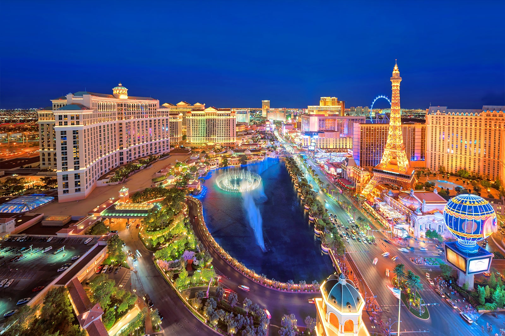

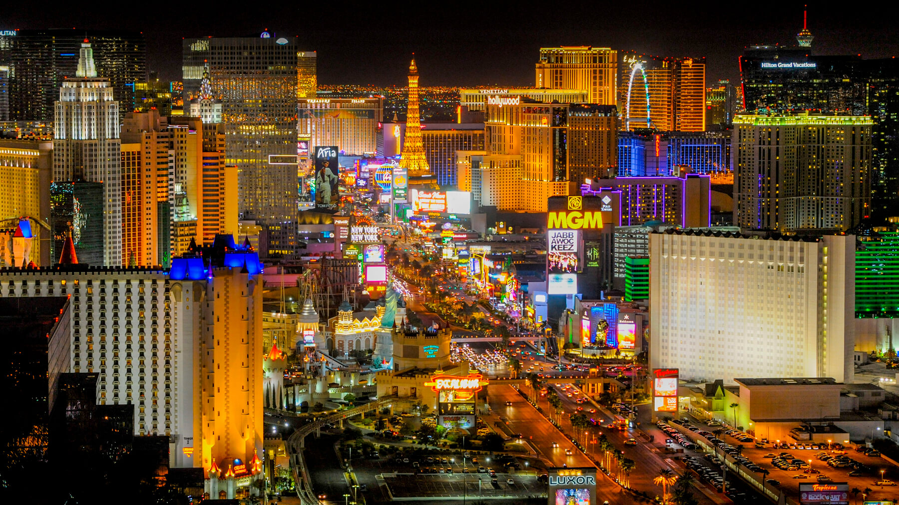
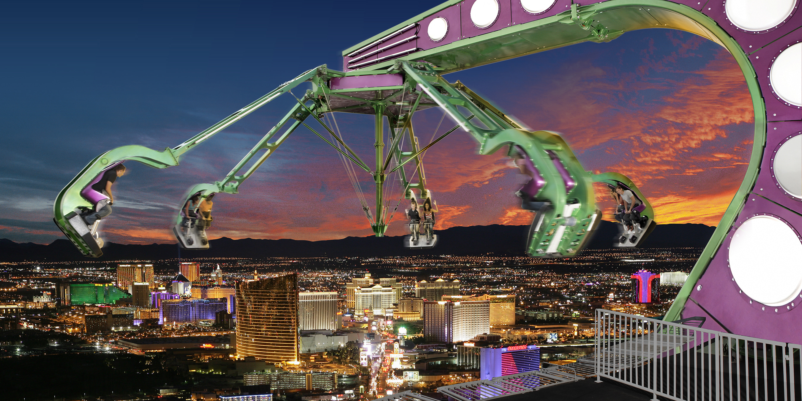
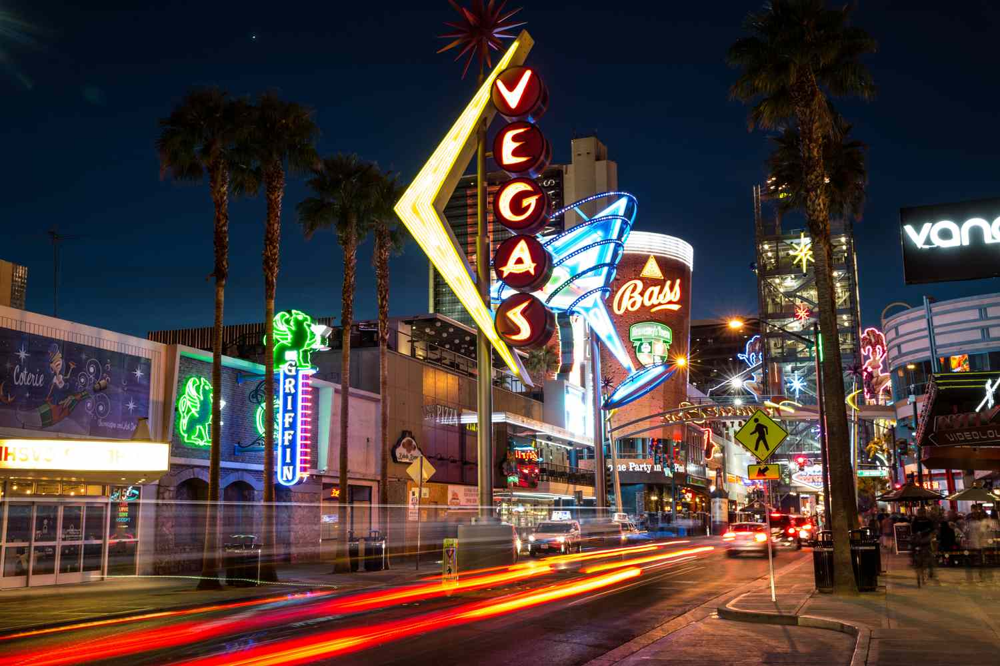
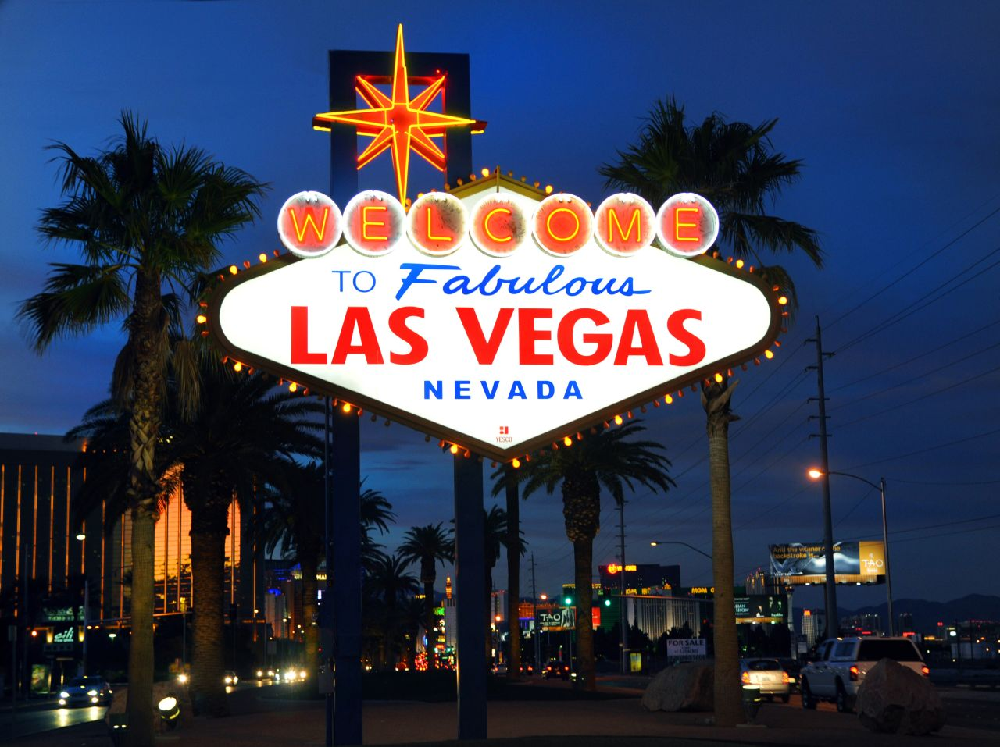
WHY VISIT THE STRIP?
The Strip, a nearly 3-kilometer long stretch that cuts through the center of Sin City and is
surrounded with luxurious resorts, theme parks, luxurious restaurants, and cheerful casinos, is the place to
go if you're lost in Las Vegas, USA. Visiting the Strip at night is much better because the entire city is
suddenly glowing with yellow lights and neon signs, making for an amazing experience. In all honesty, the
Strip and its surrounding areas are where you'll find the best sights in Las Vegas.
2. HIGH ROLLER FERRIS WHEEL
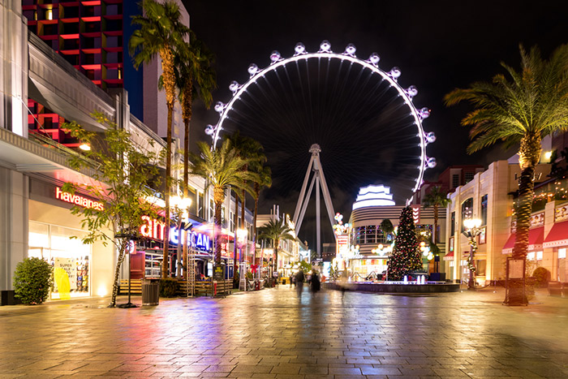
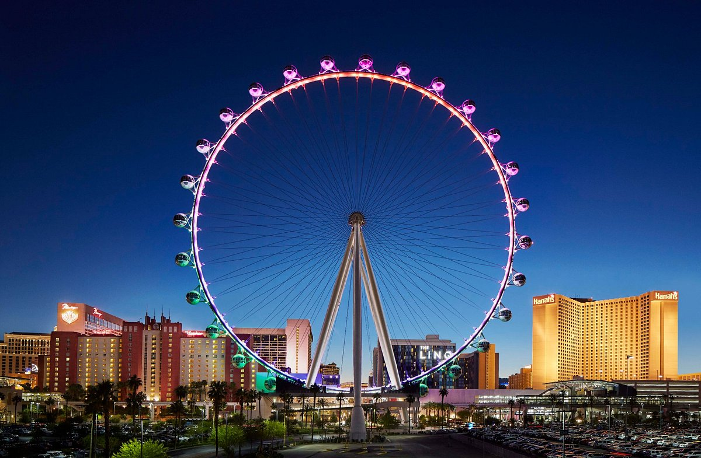
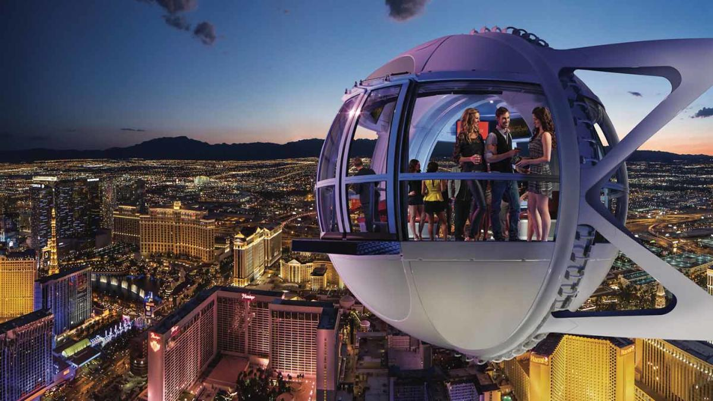
WHY VISIT HIGH ROLLER FERRIS WHEEL?
At 550 feet above the earth, the High Roller Observation Wheel is the tallest in the world. It is
one of the most identifiable landmarks in Las Vegas due to its unmistakable presence on the Strip. It is one
of the most prominent attractions on the Strip due to its appeal to tourists. You'll have time to check out
a variety of interactive displays before getting on the wheel. They will fill you in on the history of Las
Vegas and point out dangers to watch out for while riding. You'll have plenty of time to enjoy the scenery
from your glass-enclosed pod because it takes 30 minutes to complete one full rotation of the wheel.
3. RED ROCK CANYON NATIONAL CONSERVATION AREA
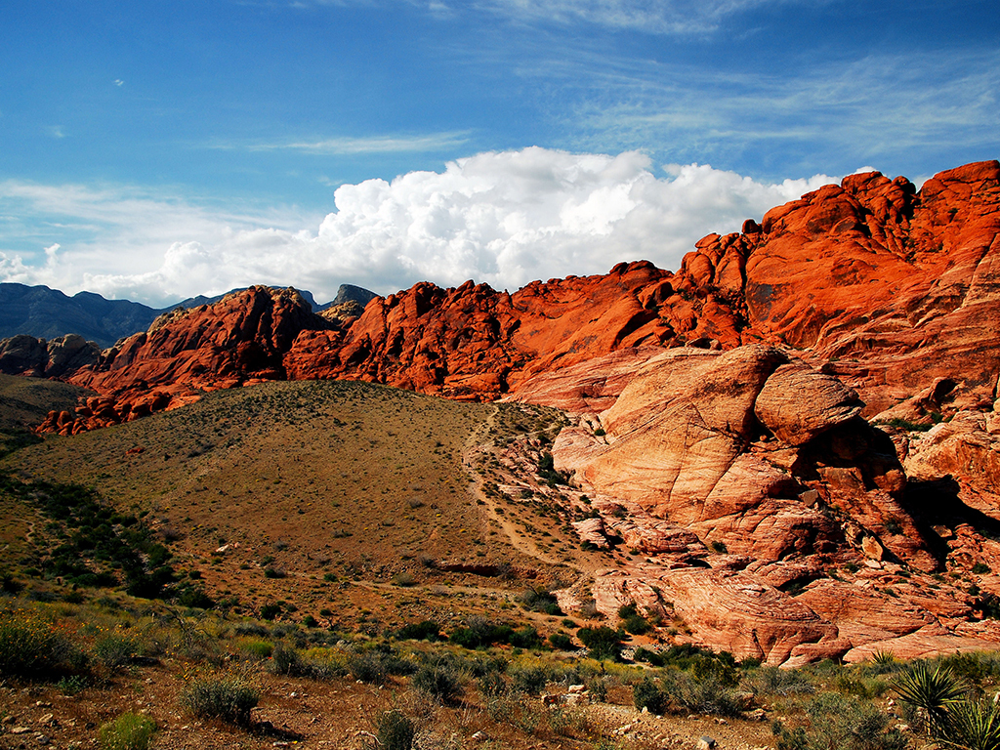
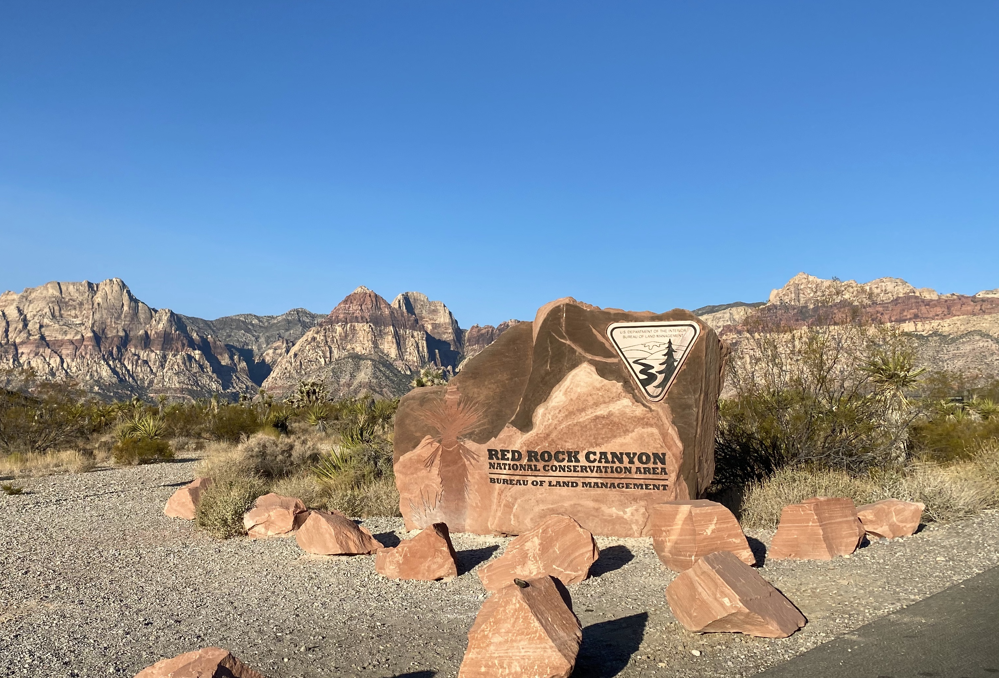
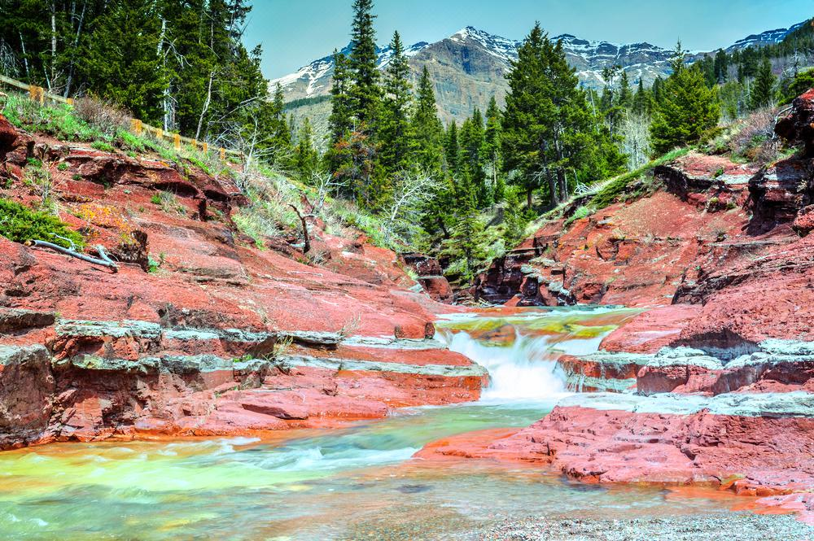
WHY VISIT RED ROCK CANYON?
The first National Conservation Area in Nevada was named Red Rock Canyon. 17 miles west of the Las
Vegas Strip, on Charleston Boulevard/State Route 159, is where you'll find Red Rock Canyon. More than two
million individuals visit the area annually. A 13-mile scenic drive, miles of hiking trails, rock climbing,
horseback riding, mountain biking, road biking, picnic areas, nature observation, a visitor center with
indoor and outdoor exhibits, and a book store are just a few of the attractions Red Rock has to offer, in
stark contrast to a town focused on entertainment and gaming.